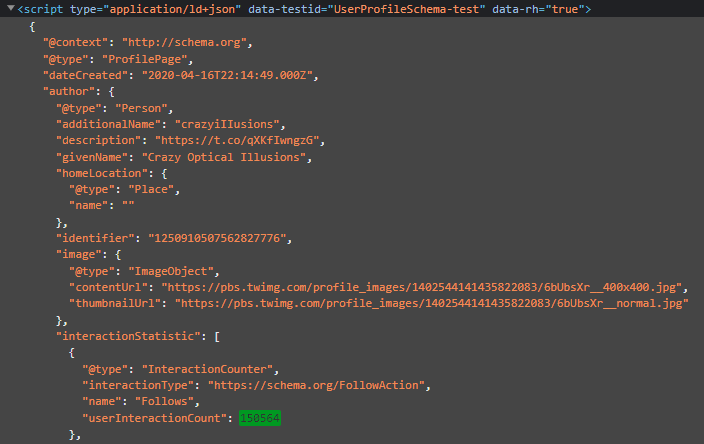

This is the update page for this project, I will be putting my thoughts and progress on this page pretty commonly, as I work on the Project The project is a way to visualize two different twitter user's overall popularity when compared to each other. Based on each users popularity, they will be put versus each other on a sort of autobattler game field, something like the relevant autochess trope in modern video games (where pieces have their own gimmicks and fight automatically) No promises on what kind of game it will be, but the strength of one team will be proportional to their twitter popularity. That is the main idea, essentially a cool looking graph.
I set up the gitup page for the project, I have worked a little bit during the summer, most of it was working to get p5 and p5.play working on a chrome extension. After managing to get that working, I spent time on trying to get used to javascript, html, and how chrome extensions work. Honestly, its been pretty tough for me to keep motivated working on this because chrome extensions make this a pain in the ass to work on for me, despite this i still think the final product will be a cool way to visualize twitter accounts metrics
At this moment I have spent most of my time researching ways i can take in data from twitter. at first I wanted to utilize the twitter api, but I found out that i was spending a lot of time trying to figure out how to go about it. Normally i would have still continued with it, but then Elon Musk bought twitter and started doing crazy things with the platform, including api changes (the same api I was going to use) Because of that, I decided to ditch the API route, and instead just have a javascript file that would just parse through the user's current tab and copy the relevant metrics I would need (followers, likes, etc) Currently I do not have that working, but once I do, I will be able to apply that knowledge to other metrics and finally have data to work with, then I can work on the actual data visualiztion. I am very excited to see how capable I am with how far I can take this!
As of now, I've finally figured out some javascript to webscrape a twitter profile page (I had no idea there was a term for it until a few hours ago) and send messages between the main .js files in my extension. Unfortunately, I am having trouble actually parsing through the twitter html page and grabbing the specific element I want. Here is an image of the element im trying to grab:  But it is proving to be a little more different than I thought. It is a "script" tag that is a .json file, and the element I want to grab "userIneractionCount" is down a few levels. If I had any other experience with javascript, apart from processing.js, then this would be easier. But for now, all I can do is have my extension tell the user whether or not they are on twitter, and if not, the extension says "not on twitter"